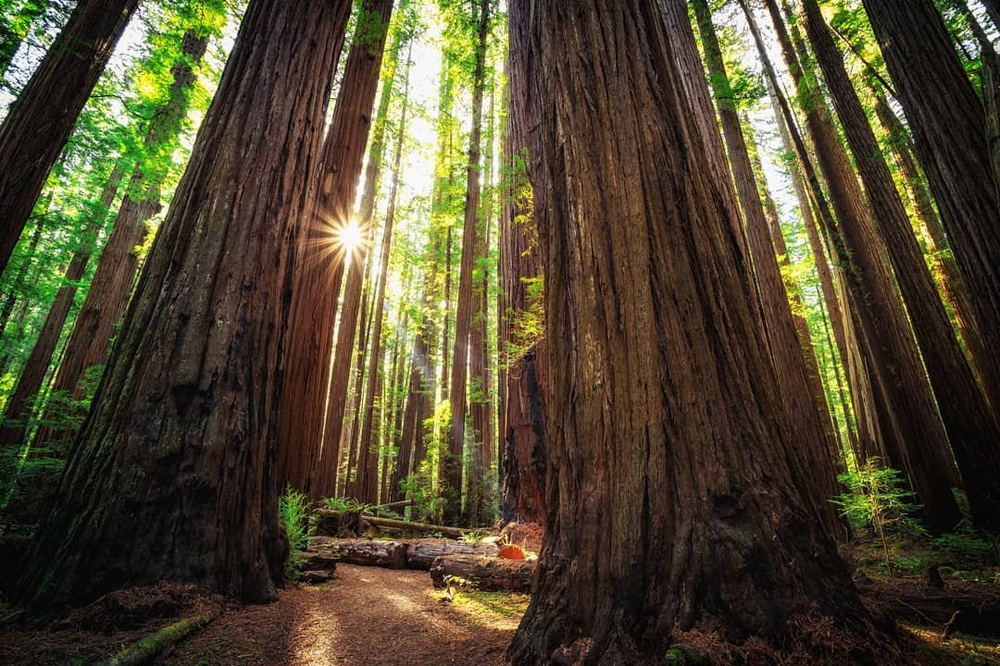

Washington
A home of 3 U.S. National Parks.
Mt. Rainier, the highest mountain in Washington state, was established in 1899 as the 5th US National Park covering over 236k acres.
Mount Rainier is an active stratovolcanoe, which is currently “sleeping”.
Unique plant and animal life together with a wide range of various outdoor recreation activities available at the territory of Mount Rainier National Park,
attract approximately two million visitors annually.
North Cascades National park covers about 505k acres and offers an extremely wide range of recreation activities
with the glaciated mountains of North Cascades being one of the most popular places among hikers, climbers and avid skiers.
Currently the North Cascades National Park is viewed as one (and definitely the largest) of 3 units,
constituting the North Cascades National Park Service Complex. Another two units of this complex are the Ross Lake National Recreation Area and Lake Chelan National Recreation Area.

Olympic National Park occupies the most territory of the Olympic Peninsula, covering the area of 922,650 acres.
It is one of the most unique national parks of the United States, amazing natural diversity of which attracts more than three million visitors annually.
Established on June 29, 1938 it continues to fascinate people coming from all over the world to enjoy this splendid treasure of Washington State.
Beautiful coastline, breathtaking rainforests, gorgeous mountain peaks of the Olympic Mountains –
Olympic National Park has everything to satisfy the demands and wishes of the most picky visitors.
California
Boasting 9 national parks, more than any other state—and each has its own unique appeal.

Redwood National Park is well-known to be the home of the tallest trees on Earth.
This World Heritage Site and International Biosphere Reserve protects nearly half of the world’s old growth redwoods,
including champion specimens more than 370 feet (113 meters) in height—or five stories taller than the Statue of Liberty.
Walk, bike, camp or horseback ride along 200 miles of trails in the park system, which in a unique state/federal partnership includes Jedediah Smith Redwoods, Del Norte Coast Redwoods, and Prairie Creek Redwoods State Parks.
The park’s forests, hills, rivers and coastline support a rich mosaic of life, including Roosevelt Elk, whales, seals and seasonal wildflowers such as lupine and rhododendron.
The sprawling park system also provides many opportunities for scenic drives.